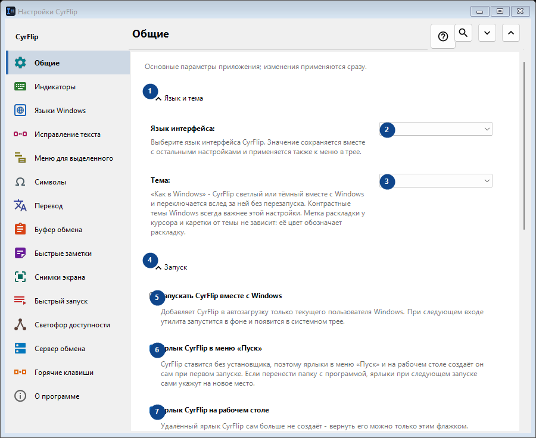
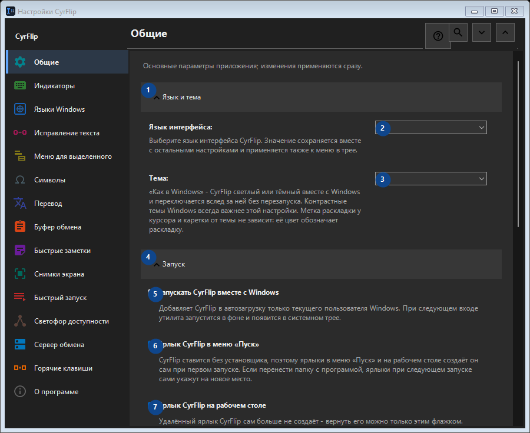

Общие
Для чего это окно
Основные параметры приложения; изменения применяются сразу.


Порядок действий
Настройки применяются сразу. Обязательного порядка нет; используйте группы ниже.
Элементы
1. Язык и тема
Используйте команду, когда нужно указанное действие. Прочитайте запрос подтверждения перед согласием.
Ваши сочетания клавиш2. Язык интерфейса
Выберите или введите значение для соседней подписи. Проверьте его перед продолжением.
Ваши сочетания клавиш3. Тема
Выберите или введите значение для соседней подписи. Проверьте его перед продолжением.
Ваши сочетания клавиш4. Запуск
Используйте команду, когда нужно указанное действие. Прочитайте запрос подтверждения перед согласием.
Ваши сочетания клавиш5. Запускать CyrFlip вместе с Windows
Добавляет CyrFlip в автозагрузку только текущего пользователя Windows. При следующем входе утилита запустится в фоне и появится в системном трее.
Ваши сочетания клавиш6. Ярлык CyrFlip в меню «Пуск»
CyrFlip ставится без установщика, поэтому ярлыки в меню «Пуск» и на рабочем столе создаёт он сам при первом запуске. Если перенести папку с программой, ярлыки при следующем запуске сами укажут на новое место.
Ваши сочетания клавиш7. Ярлык CyrFlip на рабочем столе
Удалённый ярлык CyrFlip сам больше не создаёт - вернуть его можно только этим флажком.
Ваши сочетания клавиш8. Питание и экран
Используйте команду, когда нужно указанное действие. Прочитайте запрос подтверждения перед согласием.
Ваши сочетания клавиш9. Не давать компьютеру засыпать
Пока включено, Windows не уходит в сон или гибернацию по простою — удобно для долгих загрузок, копирования или рендера. Состояние сохраняется: забытый включённым переключатель не даст компьютеру уснуть и после перезапуска - следить за вашей батареей CyrFlip не станет.
Ваши сочетания клавиш10. Не блокировать экран (как при видео)
Экран не гаснет и не блокируется по бездействию, как во время просмотра видео. Блокировку по паролю (Win+L или политику безопасности) это не отменяет. Состояние сохраняется: забытый включённым переключатель не даст экрану погаснуть и после перезапуска.
Ваши сочетания клавиш11. Перенос настроек
Используйте команду, когда нужно указанное действие. Прочитайте запрос подтверждения перед согласием.
Ваши сочетания клавиш12. Экспортировать настройки...
Используйте команду, когда нужно указанное действие. Прочитайте запрос подтверждения перед согласием.
Ваши сочетания клавиш13. Импортировать настройки...
Используйте команду, когда нужно указанное действие. Прочитайте запрос подтверждения перед согласием.
Ваши сочетания клавиш14. Вернуть настройки до импорта...
Восстанавливать пока нечего: исходное состояние CyrFlip сохраняет перед первым изменением. Элемент сейчас недоступен. Сначала включите функцию или выберите запись.
Ваши сочетания клавиш15. Хранить резервную копию настроек в Документах
Пока включено, CyrFlip хранит скользящую резервную копию всех настроек в Documents\CyrFlip\Backups - сохраняются три последние. Копия переживает переустановку из Microsoft Store: чистая установка находит её и предлагает восстановить. В файле ваши адреса, сайты и сценарии - храните его в тайне.
Ваши сочетания клавиш16. Открыть папку резервных копий
Резервные копии - обычные файлы настроек, названные по дате. Откройте папку, чтобы скопировать одну или перенести на другой компьютер.
Ваши сочетания клавиш